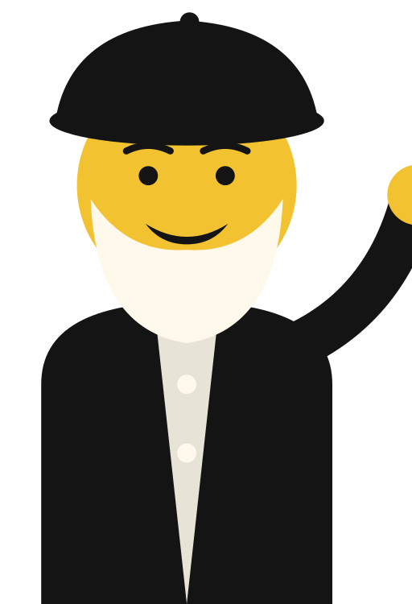
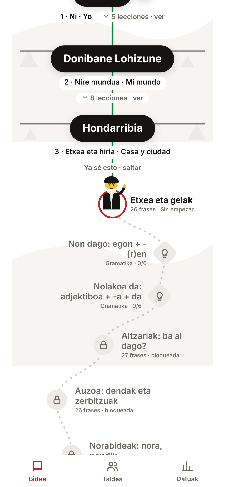
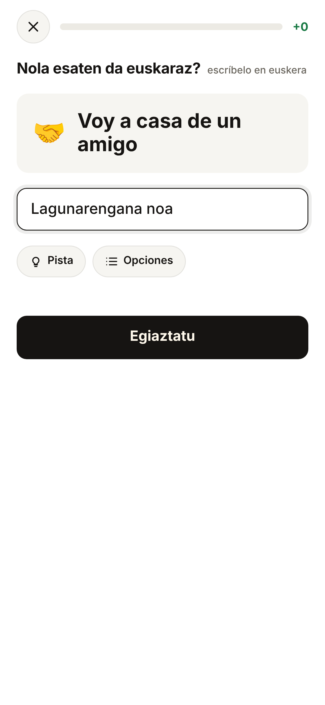
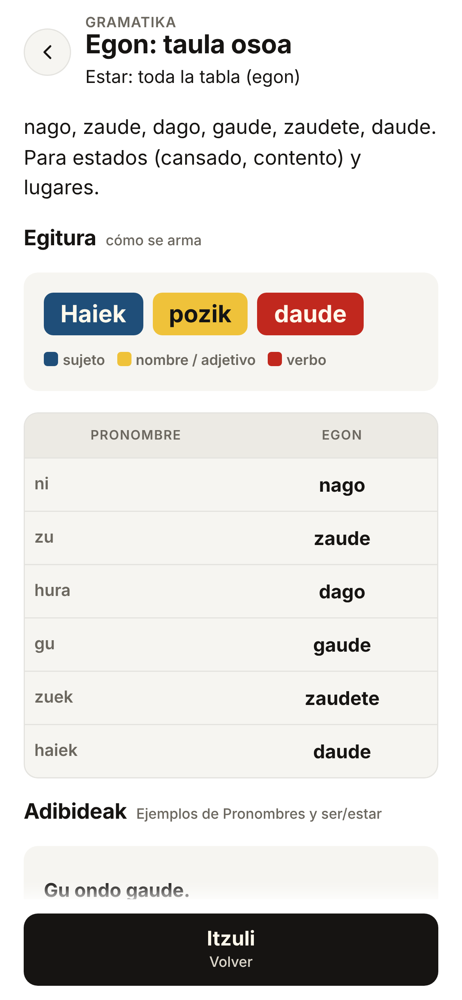

Frases de verdad, un repaso que vuelve justo cuando lo ibas a olvidar, y audio para que suene como suena. Un camino de Baiona a Maule, por los siete territorios.

Begiratu

El camino: 16 pueblos, 84 lecciones

Escribes, no eliges

Gramática cuando la necesitas
Nola funtzionatzen du
Cada frase nueva llega con su audio y su contexto: un diálogo en un bar de Hondarribia, una llamada en Iruñea.
La escribes. Al día siguiente vuelve, luego a los 3 días, a los 7… justo antes de que se te olvide. Si fallas, vuelve mañana.
Cuando la recuerdas cada vez, se queda firme. Cinco minutos al día bastan; la app te avisa cuando toca.
Bidea
Hoy, dos niveles completos (A1 y A2); los siguientes están en camino. Empieza desde cero o haz la prueba de nivel de dos minutos y entra donde te toca.
Para quien va a clase y quiere que lo visto no se evapore entre semana. Para quien vive fuera y quiere no perderlo. Para quien empieza de cero y necesita que alguien le lleve de la mano por el primer «kaixo».
Prezioak
Sin anuncios, sin vidas que se agotan ni esperas. El primer módulo es gratis, y lo que aprendes se sigue repasando siempre, pagues o no. Premium abre todos los módulos, los de hoy y los que vendrán.
Los precios se muestran y se cobran en la app a través de Google Play (IVA incluido). Profesores y grupos: códigos de acceso completo escribiendo a kaixo@euskarapraktika.eus.
Irakasleentzat
Euskara Praktika no sustituye la clase: es lo que pasa entre clase y clase. El alumno practica cinco minutos al día lo que ha visto contigo, y llega a la siguiente sesión con las frases firmes.
Si quieres probarla con tu grupo, escríbenos: te damos códigos de acceso completo para tus alumnos y te contamos cómo encaja con tu programación.
kaixo@euskarapraktika.eus